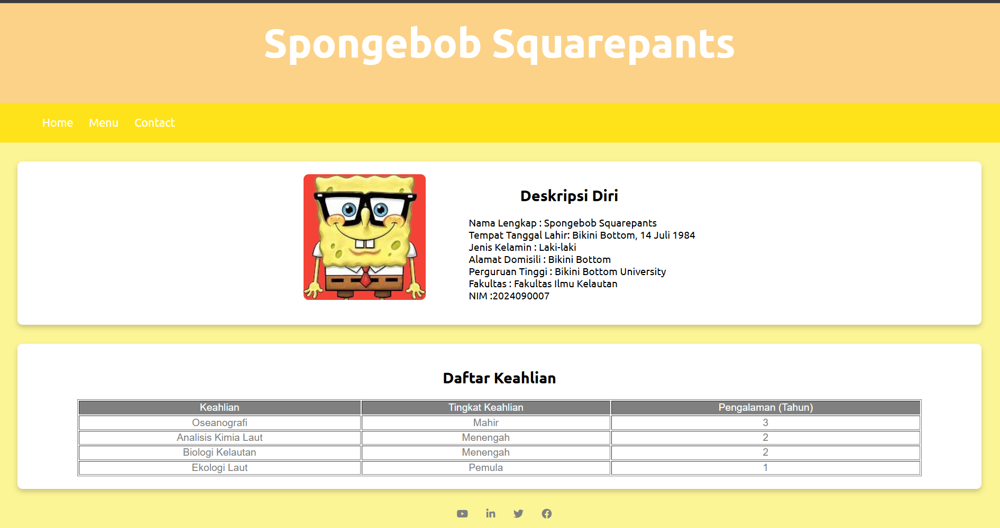
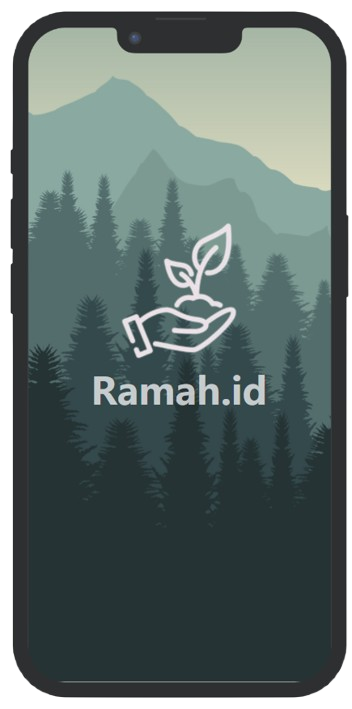

Latest Project

- Project 01 -
Project ini dibuat sebagai salah satu tugas untuk menyelesaikan program dicoding. Melalui project ini, saya belajar tentang html, css, dan prinsip desain responsive.

- Project 02 -
Project ini dibuat sebagai bagian dari tugas sekolah untuk membuat Profil Diri dalam bentuk digital. Tujuan dari project ini adalah untuk mengenalkan diri dengan cara yang kreatif dan menarik.

- Project 03 -
Ramah.id adalah sebuah startup yang bertujuan untuk memberikan solusi inovatif dan ramah lingkungan guna meningkatkan kualitas hidup masyarakat